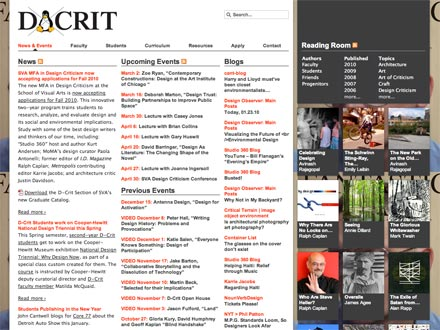
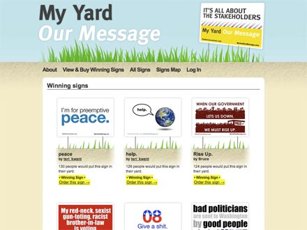
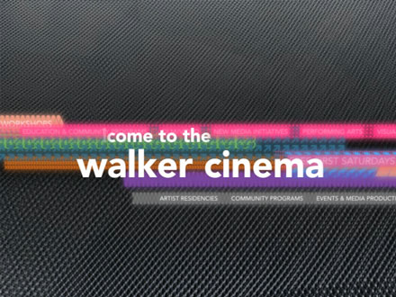
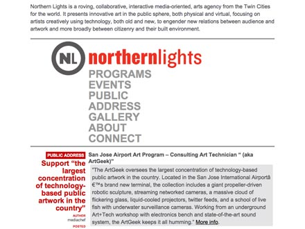
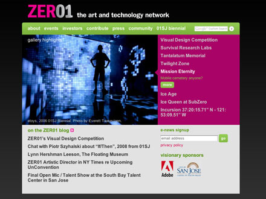
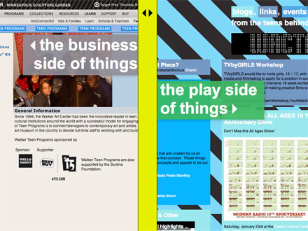
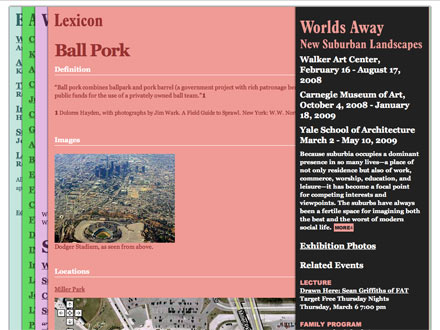
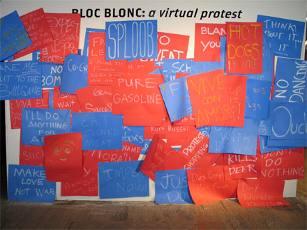
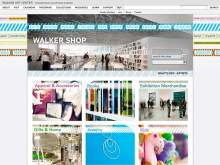

-
Walker Channel
My role: Design, front- and back-end coding.
Visit site Highlights Highlights Slide 2 Highlights Slide 3
Details: Created using Django framework, this site builds a robust system for housing the lectures and talks the Walker creates. It features a robust search engine, solr, and can import and serve video from a large number of external sources such as Amazon S3, YouTube, and Real.The multimedia hub for the Walker Art Center, built using Django.
-
Walker Mobile Website
My role: Design, front- and back-end coding.
Visit site Highlights Highlights Slide 2 Highlights Slide 3 Highlights Slide 4
Details: This project started as a 20%-time project at the Walker, but developed into a full-time project. The mobile site scrapes XML data from the main Walker site and presents it in a mobile friendly format.Mobile site for the Walker Art Center, built using Google AppEngine.
-
School of Visual Arts, Masters of Design Criticsm
Features faculty and student profiles, a library system for contributed essays, and an event calendar.
-
My Yard Our Message
A non-partisan crowd-sourced political design project, centered around the 2008 Republican National Convention.
-
Walker Cinema Teaser
A pre-roll for the Walker Cinema showing special offers and upcoming films, updated monthly.
-
Northern Lights Website
Website and identity for an exciting new media arts organization in Minnesota.
-
Party People Pictures
A high-fashion photobooth for the Walker Art Center's After Hours Preview Parties.
-
ZER01 Website
An updated and extensible site for this growing Silicon Valley based new media arts organization.
-
Walker Teen Programs
A dynamic split personality site for the institution and teens behind the Walker Art Center Teen Arts Council.
-
Worlds Away
A YouTube video competition and editable lexicon for the terms of the suburbs.
-
Bloc Blonc
A video-based time-lapse community powered virtual protest.
-
Walker Shop
Updated look and feel for the Walker's new online e-commerce site.
{kind=link}
{kind=link}
{kind=link}
{kind=link}
{kind=link}
{kind=link}
{kind=link}
-
Biography: Justin Heideman
As the headline says at the top of the page, I am a full stack web developer. That means I handle the three parts of the website creation process:
- Design: Coming up with the look and feel of the site.
- Coding: Turning the design into a working web page, creating the HTML, CSS and JavaScript.
- Back-end: Creating the server-side programming to talk to databases; Administering servers for security and other uses.
In addition to web-releated technologies, I'm fluent in the languages audio and video worlds; If it has a codec, I know what to do with it.
When I'm not creating websites, I enjoy cooking, cycling, and a brewing my own beer.
-
For hire
While I have a full-time job I enjoy at the Walker Art Center, I also supplement my income with freelance work. I especially enjoy working with art and journalism related projects, and offer a discount for nonprofits. If you have a project you'd like me to bid on or work you need done, do contact me.
-
Contact
Work related email:
work@fiddlyio.comNon-work email:
justin@fiddlyio.comPhone:
612-293-8840